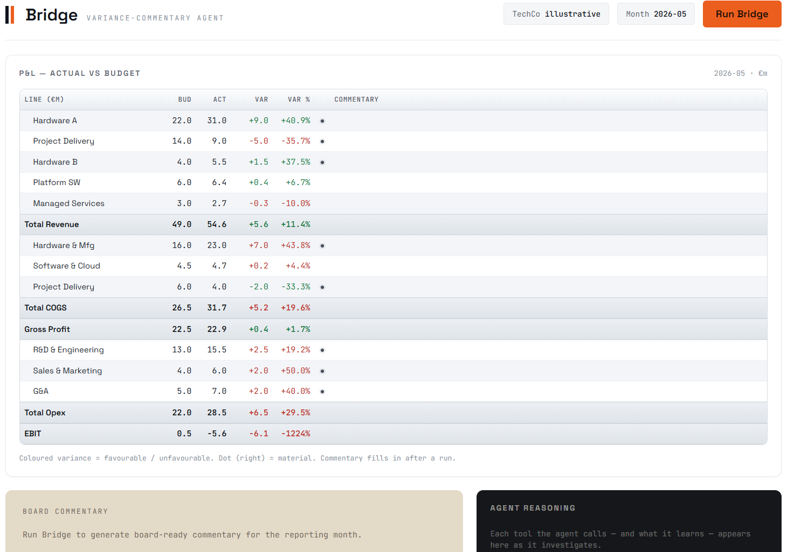
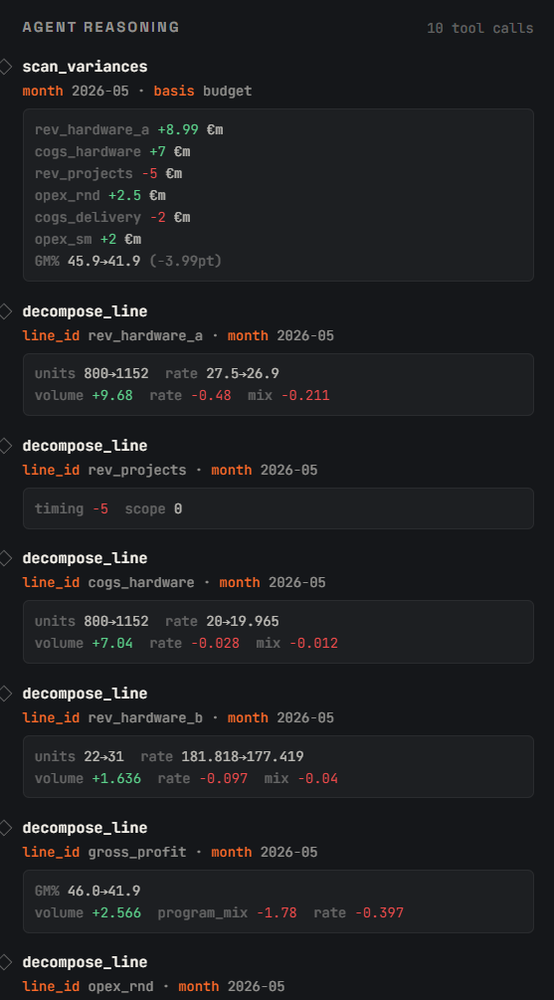
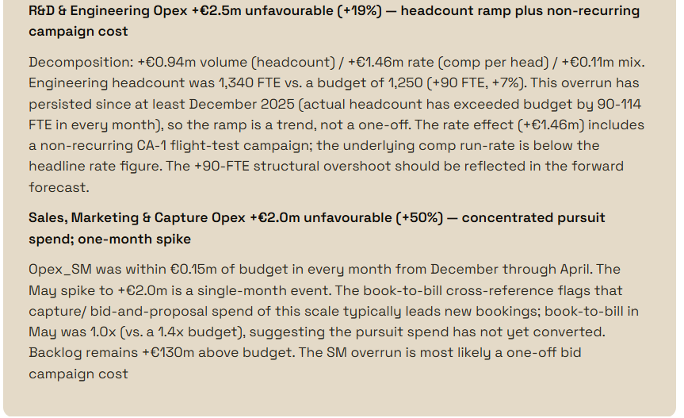

In my earlier post I wrote about the time FP&A teams spend on manual reporting — and where I wanted to take it next. This is where it went.
I built Bridge: a variance-commentary agent that reads a live P&L, investigates the material variances, and writes board-ready commentary. It also drops a one-liner next to each P&L line in the table — short annotations that give the numbers context at a glance.
The problem it solves
Variance commentary that's actually useful goes beyond reporting what moved. Revenue beat plan — but was it more units at plan price, or the same units at a higher price? Did gross margin move because of pricing, or because the product mix shifted?
Decomposing variances into their drivers is standard FP&A work. The question is how much of it can be automated — and how to do that without losing the analytical depth that makes the commentary useful in the first place.
How it's built
The architecture is three layers. A Google Sheet holds the model: drivers (units, ASP, headcount, rates) feed the P&L, variance, and decomposition tabs through formulas. Change a driver and everything recalculates. A Cloudflare Worker reads the Sheet live on each run and handles the API call, keeping credentials out of the browser. The agent UI triggers the agent, streams its reasoning as it works, and writes the output into the P&L table and the board commentary panel.
The agent has five tools: scan_variances, get_line_history, decompose_line, get_driver, and cross_reference_accounts. It calls them in a loop — scanning for material variances, then investigating each one — until it has enough to write the commentary. The tool outputs are defined by resolvers that sit between the raw model data and what the agent sees. Getting those shapes right — consistent and well-defined regardless of which line is being investigated — is what makes the loop reliable.

The P&L table after a run. Each material line has a signed, decomposition-based one-liner in the Commentary column.
The decomposition
For any line driven by volume × rate — revenue lines, most cost lines — the agent decomposes the total variance into three effects:
- Volume — the impact of producing or selling more (or fewer) units, held at plan price.
- Rate — the impact of price or unit cost differing from plan, held at plan volume.
- Mix — the interaction term (Δvolume × Δrate), which ensures the three effects sum exactly to the total variance.
At the gross profit level there's a fourth: program mix — the impact of the hardware/software revenue blend shifting within the period. A business can beat its revenue number while gross margin falls, purely because the mix tilted toward lower-margin products. That's a very different conversation than a pricing problem, and separating the two is where the decomposition earns its keep.
Milestone revenue lines use a separate decomposition: timing versus scope. Timing means the revenue is intact but recognised in a later period. Scope means work was removed. The two have completely different implications for the forecast.

The agent reasoning panel — each tool call and what it returns, streamed in real time as the agent investigates.
What it produces
After a run, Bridge outputs a prose narrative covering the headline story, the drivers behind each material variance, and the watch items for next month. Alongside that, a one-liner next to each material P&L line — specific enough to be useful, short enough to read at a glance.

A section of the board commentary. The agent identifies whether an overrun is a trend or a one-off, and flags the watch items for next month.
A few things that matter when building this kind of agent
A couple of practical lessons from building and iterating on Bridge:
Define the tool outputs precisely. The agent reasons over what the tools return. Vague or inconsistently shaped outputs produce vague commentary. In Bridge, each tool has a fixed return schema — variance figures are always signed, effects always sum to the total, decomposition types are always explicit. The model produces better output when it's working with structured, consistent data rather than trying to infer structure from raw numbers.
Prompt for structure, not just content. The agent writes two things in a single response: board prose and a per-line notes block that the UI parses to populate the table. Getting both to coexist cleanly required being very explicit in the instructions — including a concrete example of the notes format and a list of the exact line IDs to use. Without that, the model would produce good prose but skip the structured block, or format it inconsistently enough that the parser missed entries.
Build a reliable fallback for the data pipeline. Reading a live Google Sheet through a Cloudflare Worker has several failure points — the gviz API format, tab naming, caching. Bridge tags the data source in the response metadata (data_source: "google-sheet" vs "baked-fallback") so it's immediately obvious whether the agent ran on live data or a stale snapshot. Small thing, but it saves a lot of confusion when something goes wrong silently.
Bridge is a proof of concept built on a synthetic dataset. The pattern — a tool-calling agent over a live model, with the decomposition framework baked into the tool contract — is what I wanted to demonstrate. If you're working on something similar, or thinking about how agents fit into a finance function, I'd be glad to compare notes. Reach out via LinkedIn or email.